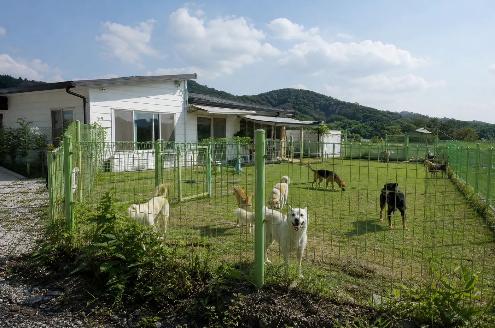

위기에 놓인 동물의 편에 섭니다.
홈워드는 구조의 순간부터 치료와 회복, 입양과 그 이후까지 전 과정을 책임지는 비영리 동물구조단체입니다.

미션 · 비전
어떤 동물도 철창 안에서 도움을 기다리지 않도록.
학대 현장, 불법 도살장, 개농장, 번식장에서 동물을 구조해 치료하고 한 마리 한 마리 가족을 찾습니다. 구조는 시작일 뿐이고, 우리의 일은 그 아이가 집에 도착해야 끝납니다.
- 2,1342017년부터 구조한 동물
- 1,792가족을 만난 동물
- 84%회복한 동물의 입양률
연혁
9년, 하나의 약속
조직 · 파트너
작은 팀, 넓은 울타리
유급 운영진 3명과 수백 명의 봉사자·재능기부자가 여기 보이는 모든 일을 합니다.
3유급 운영진 (기획·운영·웹)
640활동 봉사자 (센터·이동·재능기부)
4자문 수의사
함께하는 곳
용인시 동물복지과협력 동물병원 3곳해외 입양 파트너 (토론토·뉴욕·밴쿠버)파트너 농장 (충북)물류 후원사